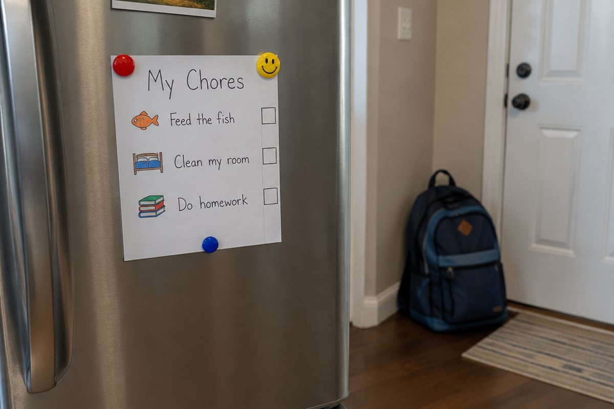

전체 단원 › 6학년 2학기 › 영어 › 해야 할 일 말하기
해야 할 일과 하면 안 되는 일을 영어로 말해 볼까?

도서관에서는 조용히 해야 하고, 수영장에서는 뛰면 안 되죠? 지켜야 할 일과 해야 할 일을 영어로 말해 봐요.
해야 할 일 말하기: should
'~해야 해'라고 말할 때는 should를 써요. "You should wash your hands.(너는 손을 씻어야 해.)"
should 뒤에는 동사의 원래 모양을 그대로 써요. "I should do my homework.(나는 숙제를 해야 해.)"
You should wear a helmet. (헬멧을 써야 해.)
하면 안 되는 일 말하기
'~하면 안 돼'라고 할 때는 should not을 줄인 shouldn't를 써요. "You shouldn't run here.(여기서 뛰면 안 돼.)"
짧게 규칙을 말할 때는 "Don't run.(뛰지 마.)"처럼 Don't를 문장 맨 앞에 붙이기도 해요. "Be quiet.(조용히 해.)"처럼 동사로 바로 시작하는 문장도 있어요.
Don't run in the hallway. / Be quiet in the library.
무엇을 해야 하는지 묻기
"What should I do?(나는 무엇을 해야 해?)"라고 물어볼 수 있어요.
감기에 걸린 친구에게는 "You should get some rest.(좀 쉬어야 해.)", "You should see a doctor.(병원에 가 봐야 해.)"처럼 조언해 줄 수 있어요.
I have a cold. - You should get some rest.
핵심 낱말
- should
- ~해야 한다
- shouldn't
- ~하면 안 된다(should not의 줄임말)
- Don't ~
- ~하지 마
- rule
- 규칙
- quiet
- 조용한
꼭 알아야 할 표현
| You should wash your hands. | 너는 손을 씻어야 해. | |
| I should do my homework. | 나는 숙제를 해야 해. | |
| You shouldn't run here. | 여기서 뛰면 안 돼. | |
| Don't run. | 뛰지 마. | 짧게 규칙을 말할 때 |
| Be quiet, please. | 조용히 해 주세요. | 도서관 같은 곳에서 |
| What should I do? | 나는 무엇을 해야 해? | |
| You should see a doctor. | 병원에 가 봐야 해. | 아픈 친구에게 조언할 때 |
한 줄 정리
- 해야 할 일은 should, 하면 안 되는 일은 shouldn't로 말해요.
- should 뒤에는 동사의 원래 모양을 써요.
- 짧은 규칙은 Don't ~. 또는 Be quiet.처럼 동사로 시작해서 말해요.
학교 교육과정 연결
- [6영02-06] 자신의 감정이나 의견, 경험이나 계획을 간단한 문장으로 표현한다.
- [6영02-07] 일상생활 주제에 관한 담화나 글의 세부 정보를 간단한 문장으로 묻거나 답한다.